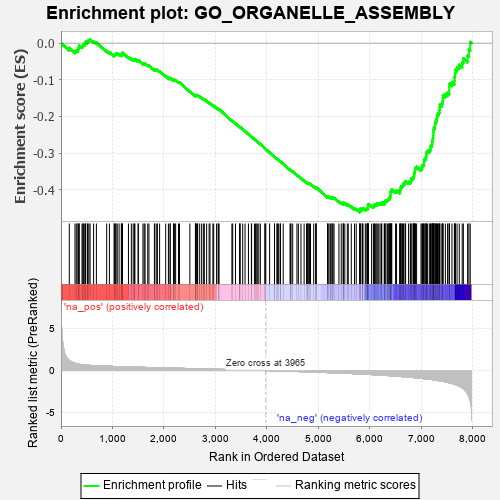
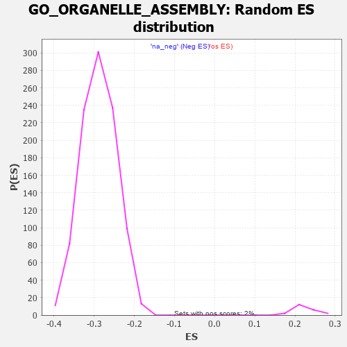

| | | Dataset | 7d |
| Phenotype | NoPhenotypeAvailable |
| Upregulated in class | na_neg |
| GeneSet | GO_ORGANELLE_ASSEMBLY |
| Enrichment Score (ES) | -0.4619163 |
| Normalized Enrichment Score (NES) | -1.6032821 |
| Nominal p-value | 0.0 |
| FDR q-value | 0.09423673 |
| FWER p-Value | 1.0 |
Table: GSEA Results Summary

Fig 1: Enrichment plot: GO_ORGANELLE_ASSEMBLY
Profile of the Running ES Score & Positions of GeneSet Members on the Rank Ordered List
| PROBE | GENE SYMBOL | GENE_TITLE | RANK IN GENE LIST | RANK METRIC SCORE | RUNNING ES | CORE ENRICHMENT | | 1 | CSRP3 | | | 161 | 1.186 | -0.0132 | No |
| 2 | ULK1 | | | 272 | 0.875 | -0.0217 | No |
| 3 | FSCN1 | | | 297 | 0.830 | -0.0194 | No |
| 4 | BOP1 | | | 330 | 0.768 | -0.0186 | No |
| 5 | WEE2 | | | 333 | 0.766 | -0.0138 | No |
| 6 | CNOT7 | | | 348 | 0.750 | -0.0108 | No |
| 7 | TAPT1 | | | 354 | 0.743 | -0.0066 | No |
| 8 | OCRL | | | 408 | 0.691 | -0.0089 | No |
| 9 | MLH1 | | | 423 | 0.679 | -0.0063 | No |
| 10 | CENPS | | | 439 | 0.666 | -0.0039 | No |
| 11 | CNOT6 | | | 462 | 0.655 | -0.0025 | No |
| 12 | NIP7 | | | 474 | 0.646 | 0.0002 | No |
| 13 | CDC20 | | | 480 | 0.644 | 0.0038 | No |
| 14 | CNOT2 | | | 514 | 0.625 | 0.0036 | No |
| 15 | KIF23 | | | 522 | 0.622 | 0.0067 | No |
| 16 | SRF | | | 542 | 0.615 | 0.0083 | No |
| 17 | NLE1 | | | 565 | 0.609 | 0.0094 | No |
| 18 | AURKC | | | 633 | 0.583 | 0.0045 | No |
| 19 | TTC36 | | | 687 | 0.563 | 0.0013 | No |
| 20 | POGZ | | | 887 | 0.509 | -0.0212 | No |
| 21 | STX17 | | | 940 | 0.497 | -0.0247 | No |
| 22 | PWP2 | | | 1030 | 0.477 | -0.0332 | No |
| 23 | RCC1 | | | 1043 | 0.475 | -0.0316 | No |
| 24 | MEF2C | | | 1054 | 0.473 | -0.0298 | No |
| 25 | STAG2 | | | 1069 | 0.470 | -0.0286 | No |
| 26 | CDK10 | | | 1092 | 0.465 | -0.0284 | No |
| 27 | SRC | | | 1128 | 0.459 | -0.0300 | No |
| 28 | RFX3 | | | 1171 | 0.451 | -0.0325 | No |
| 29 | EMC6 | | | 1183 | 0.449 | -0.0310 | No |
| 30 | NEDD1 | | | 1186 | 0.449 | -0.0283 | No |
| 31 | STK36 | | | 1193 | 0.448 | -0.0262 | No |
| 32 | ATG12 | | | 1310 | 0.427 | -0.0384 | No |
| 33 | EIF2A | | | 1366 | 0.416 | -0.0429 | No |
| 34 | NOCT | | | 1402 | 0.409 | -0.0447 | No |
| 35 | LSM4 | | | 1426 | 0.405 | -0.0451 | No |
| 36 | CHMP7 | | | 1435 | 0.403 | -0.0435 | No |
| 37 | DDX28 | | | 1498 | 0.390 | -0.0490 | No |
| 38 | E2F4 | | | 1501 | 0.390 | -0.0467 | No |
| 39 | NPRL3 | | | 1592 | 0.375 | -0.0559 | No |
| 40 | BIRC8 | | | 1615 | 0.372 | -0.0564 | No |
| 41 | DRG1 | | | 1633 | 0.368 | -0.0562 | No |
| 42 | TNPO1 | | | 1684 | 0.359 | -0.0603 | No |
| 43 | TPX2 | | | 1708 | 0.355 | -0.0610 | No |
| 44 | RPF2 | | | 1814 | 0.335 | -0.0724 | No |
| 45 | ERAL1 | | | 1823 | 0.333 | -0.0713 | No |
| 46 | SMAD4 | | | 1860 | 0.326 | -0.0738 | No |
| 47 | NUP62 | | | 1871 | 0.324 | -0.0730 | No |
| 48 | DDX6 | | | 1915 | 0.318 | -0.0765 | No |
| 49 | VPS25 | | | 2033 | 0.300 | -0.0898 | No |
| 50 | CENPE | | | 2086 | 0.293 | -0.0946 | No |
| 51 | SNF8 | | | 2119 | 0.288 | -0.0969 | No |
| 52 | INO80 | | | 2120 | 0.288 | -0.0950 | No |
| 53 | NPRL2 | | | 2184 | 0.278 | -0.1013 | No |
| 54 | C1QBP | | | 2189 | 0.278 | -0.1001 | No |
| 55 | EFL1 | | | 2207 | 0.276 | -0.1005 | No |
| 56 | CDK2 | | | 2226 | 0.272 | -0.1010 | No |
| 57 | LSM3 | | | 2282 | 0.263 | -0.1065 | No |
| 58 | NSUN4 | | | 2301 | 0.260 | -0.1071 | No |
| 59 | KAT2B | | | 2502 | 0.226 | -0.1316 | No |
| 60 | PATL1 | | | 2610 | 0.210 | -0.1441 | No |
| 61 | WIPI2 | | | 2618 | 0.210 | -0.1436 | No |
| 62 | BAG3 | | | 2620 | 0.209 | -0.1424 | No |
| 63 | PUM2 | | | 2627 | 0.209 | -0.1418 | No |
| 64 | NOP2 | | | 2648 | 0.206 | -0.1431 | No |
| 65 | VPS4A | | | 2654 | 0.205 | -0.1424 | No |
| 66 | CSDE1 | | | 2693 | 0.200 | -0.1460 | No |
| 67 | DCTN3 | | | 2731 | 0.193 | -0.1495 | No |
| 68 | TTLL1 | | | 2764 | 0.189 | -0.1525 | No |
| 69 | SCFD1 | | | 2783 | 0.185 | -0.1536 | No |
| 70 | BECN1 | | | 2828 | 0.179 | -0.1581 | No |
| 71 | CIRBP | | | 2876 | 0.170 | -0.1631 | No |
| 72 | MTM1 | | | 2893 | 0.168 | -0.1641 | No |
| 73 | RAB17 | | | 2950 | 0.157 | -0.1703 | No |
| 74 | KIF4B | | | 2965 | 0.155 | -0.1711 | No |
| 75 | BSCL2 | | | 3021 | 0.146 | -0.1773 | No |
| 76 | PAN3 | | | 3054 | 0.142 | -0.1805 | No |
| 77 | FEZ1 | | | 3055 | 0.142 | -0.1796 | No |
| 78 | ATG9A | | | 3069 | 0.141 | -0.1804 | No |
| 79 | RAB8A | | | 3319 | 0.102 | -0.2120 | No |
| 80 | RFX4 | | | 3334 | 0.099 | -0.2132 | No |
| 81 | DDX3X | | | 3388 | 0.091 | -0.2195 | No |
| 82 | ATG3 | | | 3471 | 0.081 | -0.2296 | No |
| 83 | CNOT1 | | | 3473 | 0.081 | -0.2292 | No |
| 84 | HGS | | | 3476 | 0.080 | -0.2289 | No |
| 85 | HDAC3 | | | 3528 | 0.072 | -0.2351 | No |
| 86 | EXOC5 | | | 3574 | 0.064 | -0.2405 | No |
| 87 | SBDS | | | 3640 | 0.053 | -0.2486 | No |
| 88 | VTA1 | | | 3697 | 0.043 | -0.2556 | No |
| 89 | SMC3 | | | 3701 | 0.042 | -0.2557 | No |
| 90 | ATG2B | | | 3756 | 0.033 | -0.2625 | No |
| 91 | CEP19 | | | 3778 | 0.031 | -0.2650 | No |
| 92 | VMP1 | | | 3803 | 0.027 | -0.2679 | No |
| 93 | SFI1 | | | 3810 | 0.026 | -0.2685 | No |
| 94 | PRC1 | | | 3841 | 0.021 | -0.2723 | No |
| 95 | NEK2 | | | 3871 | 0.016 | -0.2759 | No |
| 96 | NCOR1 | | | 3961 | 0.000 | -0.2875 | No |
| 97 | STX18 | | | 3962 | 0.000 | -0.2875 | No |
| 98 | CHMP6 | | | 3977 | -0.003 | -0.2893 | No |
| 99 | ATG5 | | | 4051 | -0.016 | -0.2986 | No |
| 100 | MZT1 | | | 4145 | -0.032 | -0.3105 | No |
| 101 | STX7 | | | 4147 | -0.033 | -0.3104 | No |
| 102 | STAM2 | | | 4193 | -0.041 | -0.3160 | No |
| 103 | VPS11 | | | 4202 | -0.041 | -0.3168 | No |
| 104 | BBIP1 | | | 4226 | -0.046 | -0.3194 | No |
| 105 | RRS1 | | | 4256 | -0.051 | -0.3229 | No |
| 106 | WDR11 | | | 4262 | -0.052 | -0.3232 | No |
| 107 | AUP1 | | | 4315 | -0.062 | -0.3295 | No |
| 108 | KIF3B | | | 4450 | -0.085 | -0.3464 | No |
| 109 | SPAG1 | | | 4453 | -0.085 | -0.3461 | No |
| 110 | LRRK2 | | | 4467 | -0.087 | -0.3472 | No |
| 111 | MEF2A | | | 4499 | -0.095 | -0.3506 | No |
| 112 | VPS28 | | | 4582 | -0.114 | -0.3605 | No |
| 113 | SMC1A | | | 4609 | -0.120 | -0.3631 | No |
| 114 | CHMP3 | | | 4660 | -0.129 | -0.3687 | No |
| 115 | DCX | | | 4721 | -0.143 | -0.3756 | No |
| 116 | POC1A | | | 4768 | -0.151 | -0.3805 | No |
| 117 | RAB14 | | | 4784 | -0.155 | -0.3815 | No |
| 118 | FLII | | | 4795 | -0.156 | -0.3818 | No |
| 119 | CEP97 | | | 4812 | -0.160 | -0.3828 | No |
| 120 | WDR1 | | | 4824 | -0.163 | -0.3832 | No |
| 121 | VPS36 | | | 4845 | -0.167 | -0.3847 | No |
| 122 | IFT43 | | | 4907 | -0.179 | -0.3914 | No |
| 123 | XRCC5 | | | 4946 | -0.187 | -0.3951 | No |
| 124 | CHMP5 | | | 4952 | -0.188 | -0.3945 | No |
| 125 | PRKDC | | | 4955 | -0.189 | -0.3936 | No |
| 126 | DCTN2 | | | 5175 | -0.243 | -0.4204 | No |
| 127 | HDAC6 | | | 5183 | -0.244 | -0.4197 | No |
| 128 | PARVA | | | 5187 | -0.245 | -0.4185 | No |
| 129 | TMF1 | | | 5225 | -0.251 | -0.4217 | No |
| 130 | GPSM2 | | | 5228 | -0.252 | -0.4203 | No |
| 131 | PTEN | | | 5262 | -0.261 | -0.4229 | No |
| 132 | CDK1 | | | 5264 | -0.262 | -0.4213 | No |
| 133 | CEP70 | | | 5282 | -0.267 | -0.4218 | No |
| 134 | RAB7A | | | 5302 | -0.271 | -0.4225 | No |
| 135 | PLK4 | | | 5397 | -0.295 | -0.4327 | No |
| 136 | IST1 | | | 5442 | -0.305 | -0.4364 | No |
| 137 | KIF3A | | | 5480 | -0.313 | -0.4392 | No |
| 138 | STIL | | | 5483 | -0.314 | -0.4374 | No |
| 139 | CEP76 | | | 5485 | -0.315 | -0.4355 | No |
| 140 | KIF2A | | | 5511 | -0.322 | -0.4366 | No |
| 141 | EHD1 | | | 5560 | -0.336 | -0.4407 | No |
| 142 | NDE1 | | | 5578 | -0.339 | -0.4407 | No |
| 143 | ASPM | | | 5637 | -0.358 | -0.4459 | No |
| 144 | TTBK2 | | | 5700 | -0.376 | -0.4515 | No |
| 145 | LRFN4 | | | 5733 | -0.387 | -0.4531 | No |
| 146 | IFT46 | | | 5802 | -0.406 | -0.4593 | Yes |
| 147 | BBS4 | | | 5806 | -0.407 | -0.4570 | Yes |
| 148 | PAN2 | | | 5807 | -0.408 | -0.4543 | Yes |
| 149 | MTMR3 | | | 5809 | -0.408 | -0.4518 | Yes |
| 150 | ARL6 | | | 5847 | -0.417 | -0.4539 | Yes |
| 151 | ATG7 | | | 5858 | -0.420 | -0.4525 | Yes |
| 152 | BBS5 | | | 5862 | -0.421 | -0.4501 | Yes |
| 153 | RAB32 | | | 5909 | -0.438 | -0.4532 | Yes |
| 154 | LRFN1 | | | 5926 | -0.443 | -0.4524 | Yes |
| 155 | DCTN1 | | | 5950 | -0.454 | -0.4524 | Yes |
| 156 | AGFG1 | | | 5955 | -0.457 | -0.4500 | Yes |
| 157 | ACTN2 | | | 5960 | -0.458 | -0.4475 | Yes |
| 158 | CNTRL | | | 5961 | -0.459 | -0.4445 | Yes |
| 159 | B9D1 | | | 5962 | -0.459 | -0.4415 | Yes |
| 160 | CENPJ | | | 5968 | -0.460 | -0.4392 | Yes |
| 161 | CKAP5 | | | 6032 | -0.482 | -0.4442 | Yes |
| 162 | HYLS1 | | | 6067 | -0.495 | -0.4454 | Yes |
| 163 | PLK1 | | | 6082 | -0.500 | -0.4439 | Yes |
| 164 | DBNL | | | 6084 | -0.501 | -0.4408 | Yes |
| 165 | ATG13 | | | 6110 | -0.508 | -0.4407 | Yes |
| 166 | IFT80 | | | 6135 | -0.515 | -0.4405 | Yes |
| 167 | TNKS | | | 6138 | -0.516 | -0.4374 | Yes |
| 168 | GRID2 | | | 6170 | -0.528 | -0.4380 | Yes |
| 169 | B9D2 | | | 6196 | -0.535 | -0.4377 | Yes |
| 170 | TPM1 | | | 6226 | -0.545 | -0.4379 | Yes |
| 171 | EHD4 | | | 6227 | -0.545 | -0.4344 | Yes |
| 172 | DRC1 | | | 6278 | -0.565 | -0.4372 | Yes |
| 173 | IFT52 | | | 6280 | -0.566 | -0.4336 | Yes |
| 174 | TRAF7 | | | 6290 | -0.571 | -0.4311 | Yes |
| 175 | IFT57 | | | 6307 | -0.579 | -0.4294 | Yes |
| 176 | IFT88 | | | 6335 | -0.590 | -0.4290 | Yes |
| 177 | IFT27 | | | 6348 | -0.596 | -0.4267 | Yes |
| 178 | ARMC2 | | | 6363 | -0.602 | -0.4246 | Yes |
| 179 | BBS2 | | | 6383 | -0.608 | -0.4231 | Yes |
| 180 | CDKL1 | | | 6388 | -0.610 | -0.4197 | Yes |
| 181 | BBS1 | | | 6397 | -0.616 | -0.4167 | Yes |
| 182 | RALB | | | 6399 | -0.617 | -0.4128 | Yes |
| 183 | IFT22 | | | 6400 | -0.617 | -0.4088 | Yes |
| 184 | NEK1 | | | 6402 | -0.618 | -0.4049 | Yes |
| 185 | RAB43 | | | 6419 | -0.628 | -0.4029 | Yes |
| 186 | PTPRD | | | 6423 | -0.629 | -0.3991 | Yes |
| 187 | RTTN | | | 6497 | -0.659 | -0.4043 | Yes |
| 188 | CEP41 | | | 6516 | -0.669 | -0.4023 | Yes |
| 189 | RPGR | | | 6579 | -0.699 | -0.4058 | Yes |
| 190 | CLN3 | | | 6580 | -0.699 | -0.4012 | Yes |
| 191 | ALMS1 | | | 6590 | -0.704 | -0.3978 | Yes |
| 192 | TPR | | | 6597 | -0.709 | -0.3940 | Yes |
| 193 | MKS1 | | | 6607 | -0.715 | -0.3905 | Yes |
| 194 | WWTR1 | | | 6631 | -0.729 | -0.3887 | Yes |
| 195 | PTPRS | | | 6646 | -0.738 | -0.3857 | Yes |
| 196 | RAB5A | | | 6655 | -0.741 | -0.3819 | Yes |
| 197 | TTC8 | | | 6682 | -0.753 | -0.3804 | Yes |
| 198 | OFD1 | | | 6692 | -0.758 | -0.3766 | Yes |
| 199 | KIF27 | | | 6750 | -0.786 | -0.3789 | Yes |
| 200 | C2CD3 | | | 6783 | -0.802 | -0.3778 | Yes |
| 201 | WDR19 | | | 6796 | -0.812 | -0.3741 | Yes |
| 202 | TBPL1 | | | 6798 | -0.814 | -0.3689 | Yes |
| 203 | FHOD3 | | | 6835 | -0.834 | -0.3681 | Yes |
| 204 | CEP72 | | | 6846 | -0.839 | -0.3640 | Yes |
| 205 | TTLL3 | | | 6857 | -0.845 | -0.3598 | Yes |
| 206 | AHI1 | | | 6860 | -0.848 | -0.3545 | Yes |
| 207 | NINL | | | 6869 | -0.851 | -0.3500 | Yes |
| 208 | ARMC9 | | | 6875 | -0.852 | -0.3451 | Yes |
| 209 | IQCB1 | | | 6882 | -0.856 | -0.3403 | Yes |
| 210 | MYH11 | | | 6905 | -0.870 | -0.3375 | Yes |
| 211 | NPHP4 | | | 6991 | -0.931 | -0.3424 | Yes |
| 212 | DZIP1 | | | 7009 | -0.940 | -0.3385 | Yes |
| 213 | CEP83 | | | 7020 | -0.950 | -0.3336 | Yes |
| 214 | ARL3 | | | 7041 | -0.963 | -0.3299 | Yes |
| 215 | MYH10 | | | 7048 | -0.966 | -0.3244 | Yes |
| 216 | PIBF1 | | | 7049 | -0.966 | -0.3181 | Yes |
| 217 | CETN1 | | | 7073 | -0.978 | -0.3147 | Yes |
| 218 | BBS7 | | | 7089 | -0.988 | -0.3102 | Yes |
| 219 | TTC25 | | | 7094 | -0.992 | -0.3043 | Yes |
| 220 | RAB1A | | | 7096 | -0.993 | -0.2980 | Yes |
| 221 | LDB3 | | | 7119 | -1.008 | -0.2942 | Yes |
| 222 | WDR60 | | | 7153 | -1.038 | -0.2918 | Yes |
| 223 | HYDIN | | | 7173 | -1.049 | -0.2874 | Yes |
| 224 | TEKT2 | | | 7177 | -1.053 | -0.2809 | Yes |
| 225 | CETN2 | | | 7200 | -1.070 | -0.2768 | Yes |
| 226 | MFN2 | | | 7208 | -1.081 | -0.2707 | Yes |
| 227 | IFT74 | | | 7211 | -1.085 | -0.2638 | Yes |
| 228 | TCHP | | | 7224 | -1.099 | -0.2582 | Yes |
| 229 | LRGUK | | | 7229 | -1.101 | -0.2516 | Yes |
| 230 | RSPH1 | | | 7231 | -1.101 | -0.2445 | Yes |
| 231 | WDR34 | | | 7233 | -1.103 | -0.2375 | Yes |
| 232 | FBF1 | | | 7241 | -1.111 | -0.2312 | Yes |
| 233 | KIF9 | | | 7261 | -1.135 | -0.2262 | Yes |
| 234 | RSPH9 | | | 7265 | -1.137 | -0.2192 | Yes |
| 235 | IFT81 | | | 7277 | -1.151 | -0.2131 | Yes |
| 236 | KIF17 | | | 7291 | -1.160 | -0.2073 | Yes |
| 237 | MYO7A | | | 7302 | -1.175 | -0.2009 | Yes |
| 238 | ARMC4 | | | 7311 | -1.181 | -0.1943 | Yes |
| 239 | CYLD | | | 7333 | -1.206 | -0.1891 | Yes |
| 240 | TEKT1 | | | 7349 | -1.220 | -0.1831 | Yes |
| 241 | CEP89 | | | 7354 | -1.223 | -0.1757 | Yes |
| 242 | WDR35 | | | 7357 | -1.225 | -0.1679 | Yes |
| 243 | WDR78 | | | 7396 | -1.261 | -0.1647 | Yes |
| 244 | WDR63 | | | 7411 | -1.276 | -0.1582 | Yes |
| 245 | NEK7 | | | 7415 | -1.285 | -0.1502 | Yes |
| 246 | SPEF2 | | | 7418 | -1.289 | -0.1420 | Yes |
| 247 | CEP78 | | | 7464 | -1.354 | -0.1390 | Yes |
| 248 | BBOF1 | | | 7507 | -1.401 | -0.1354 | Yes |
| 249 | TEKT4 | | | 7539 | -1.455 | -0.1299 | Yes |
| 250 | GAS8 | | | 7540 | -1.455 | -0.1204 | Yes |
| 251 | IQCG | | | 7541 | -1.455 | -0.1109 | Yes |
| 252 | SAXO1 | | | 7592 | -1.543 | -0.1074 | Yes |
| 253 | CROCC | | | 7639 | -1.628 | -0.1027 | Yes |
| 254 | MNS1 | | | 7642 | -1.633 | -0.0924 | Yes |
| 255 | IQUB | | | 7653 | -1.653 | -0.0829 | Yes |
| 256 | TEKT3 | | | 7658 | -1.657 | -0.0726 | Yes |
| 257 | MDM1 | | | 7691 | -1.742 | -0.0654 | Yes |
| 258 | PLS1 | | | 7734 | -1.855 | -0.0588 | Yes |
| 259 | NPHP1 | | | 7791 | -2.041 | -0.0527 | Yes |
| 260 | DCDC2 | | | 7813 | -2.099 | -0.0418 | Yes |
| 261 | CAV3 | | | 7896 | -2.739 | -0.0346 | Yes |
| 262 | MDN1 | | | 7921 | -3.061 | -0.0177 | Yes |
| 263 | XIAP | | | 7947 | -3.696 | 0.0031 | Yes |
Table: GSEA details [plain text format]

Fig 2: GO_ORGANELLE_ASSEMBLY: Random ES distribution
Gene set null distribution of ES for GO_ORGANELLE_ASSEMBLY